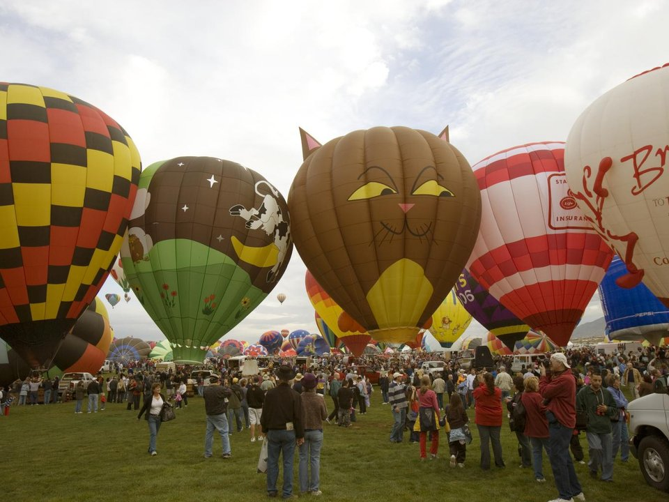

Los Ranchos · Historic farm inn
Los Poblanos
A historic inn and organic lavender farm with Campo restaurant.
Official details for Los PoblanosBalloons, chile and a tram to the sky.
Albuquerque spreads along the Rio Grande below the Sandia Mountains, and every October it hosts the world’s largest balloon festival. Land at Double Eagle II on the west mesa, stay at the historic Los Poblanos farm inn or Hotel Albuquerque in Old Town, ride the Sandia Peak Tramway to 10,378 feet, eat red and green chile, and learn about the 19 Pueblos at the Indian Pueblo Cultural Center.

Time illustration: direct distance at 150 KTAS plus 15 minutes for departure and arrival, matching the discovery page. Use ForeFlight for your actual flight plan.
KAEG, Double Eagle II, is a towered general-aviation airport at 5,837 feet with a 7,398-foot main runway on the west mesa, about 25 minutes from Old Town.
Double Eagle II Airport, Albuquerque, NM
A quieter alternative to the Albuquerque Sunport (KABQ), a Class C airport with airline traffic. Avoid the live-fire range 1.6 nm west of the Runway 4 threshold. Balloon Fiesta week has special procedures and heavy traffic. No live fuel price is shown.
High desert flying: high density altitude in summer, strong gusty spring winds and mountain wave, afternoon monsoon storms from July to September, winter snow, and long distances between airports. About 1380 nm from Myrtle Beach: two long days each way with several fuel stops. Plan a week, or overnight on the way out and back.
Rates and availability need travel dates. Balloon Fiesta week books up a year ahead.
A historic inn and organic lavender farm with Campo restaurant.
Official details for Los PoblanosA Southwestern hotel next to Old Town.
Official details for Hotel Albuquerque at Old TownReserve weekend dinners.
Rio Grande Valley cooking at the farm.
Official details for Campo at Los PoblanosA local favorite for chile since 1954.
Official details for Sadie’s of New MexicoNew Mexican food in one of the oldest houses in Old Town.
Official details for Church Street CaféRide the tram near sunset for the best light.
Ballooning history at the Fiesta field.
Balloon Museum FoundationThe atomic age, with aircraft and missiles outside.
Nuclear MuseumThis prototype links to the local visitor site. It does not yet match events to your travel dates.
Hundreds of balloons at dawn.
Balloon Fiesta for Albuquerque International Balloon FiestaThe smell of roasting green chile everywhere.
Visit Albuquerque for Chile roasting seasonThousands of rock carvings on the west mesa.
NPS for Petroglyph National MonumentCheck the local calendar when choosing a weekend, and confirm dates and tickets with the organizer.
A sample Albuquerque weekend. This is a two-day flight each way; plan a week. No bookings or availability confirmed.
Land at KAEG mid-morning.
Old Town and lunch at Church Street Café.
The Balloon Museum, then back to the airport.
Land at KAEG, subject to weather, density altitude and your actual flight plan.
Petroglyph National Monument near the airport.
Dinner at Sadie’s.
The Indian Pueblo Cultural Center.
The Sandia Peak Tramway at sunset.
Dinner at Campo.
Old Town and lunch at Church Street Café.
Compute takeoff performance for the temperature and allow time at the FBO.
Desert afternoons are hot, bumpy and gusty; leave in the morning.
Indian Pueblo Cultural Center.
Sandia Peak Tramway.
Dinner at Campo.
These details make the difference between an appealing list and a usable getaway.
Lodging first, especially for Balloon Fiesta.
About 1,380 nm from Myrtle Beach: two days each way.
Read the special flight procedures if you fly in that week.
April to October.
Picks and links reviewed by WingAway Weekends. Hours, prices, menus and availability change often, so confirm directly with each place before booking. Spotted something out of date, or have a favorite we missed? Email us at hello@wingawayweekends.com.
WingAway Weekends helps you discover the destination. Use ForeFlight and current official aviation information for route, performance, weather, NOTAMs and preflight decisions. Flight planning and PIC responsibility stay with the pilot.